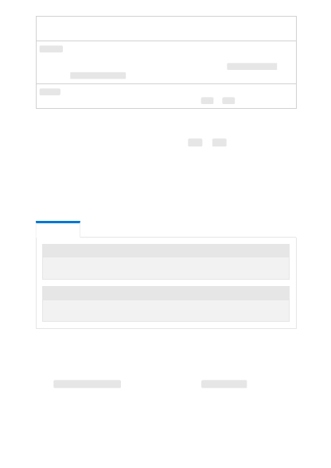

Variable
name
Value
ENDPOINT
This value can be found in the Keys & Endpoint section when examining your
resource from the Azure portal. Alternatively, you can find the value in Azure OpenAI
Studio > Playground > Code View. An example endpoint is: https://docs-test-
001.openai.azure.com
.
API-KEY
This value can be found in the Keys & Endpoint section when examining your
resource from the Azure portal. You can use either KEY1 or KEY2 .
Go to your resource in the Azure portal. The Endpoint and Keys can be found in the
Resource Management section. Copy your endpoint and access key as you'll need both
for authenticating your API calls. You can use either KEY1 or KEY2. Always having two
keys allows you to securely rotate and regenerate keys without causing a service
disruption.
Create and assign persistent environment variables for your key and endpoint.
CMD
CMD
After setting the environment variables, you may need to close and reopen Jupyter
notebooks or whatever IDE you're using in order for the environment variables to be
accessible. While we strongly recommend using Jupyter Notebooks, if for some reason
you cannot you'll need to modify any code that is returning a pandas dataframe by
using print(dataframe_name) rather than just calling the dataframe_name directly as is
often done at the end of a code block.
Run the following code in your preferred Python IDE:
Environment variables
setx AZURE_OPENAI_API_KEY "REPLACE_WITH_YOUR_KEY_VALUE_HERE"
setx AZURE_OPENAI_ENDPOINT "REPLACE_WITH_YOUR_ENDPOINT_HERE"
Import libraries and list models